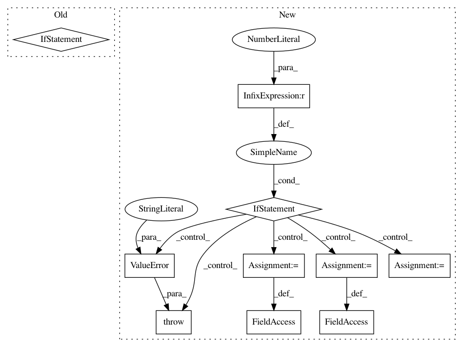

21afedb8933b4071d546ff21ac88f66da898c265,wandb/integration/keras/keras.py,WandbCallback,__init__,#WandbCallback#Any#Any#Any#Any#Any#Any#Any#Any#Any#Any#Any#Any#Any#Any#Any#Any#Any#Any#Any#Any#Any#,238
Before Change
self._prediction_batch_size = None
if self.training_data:
if len(self.training_data) != 2:
raise ValueError("training data must be a tuple of length two")
// From Keras
if mode not in ["auto", "min", "max"]:
print(
"WandbCallback mode %s is unknown, " "fallback to auto mode." % (mode)
)
After Change
self._prediction_batch_size = None
if self.log_gradients:
if int(tf.__version__.split(".")[0]) < 2:
raise Exception("Gradient logging requires tensorflow 2.0 or higher.")
if self.training_data is None:
raise ValueError(
"training_data argument is required for gradient logging."
)
if isinstance(self.training_data, (list, tuple)):
if len(self.training_data) != 2:
raise ValueError("training data must be a tuple of length two")
self._training_data_x, self._training_data_y = self.training_data
else:
self._training_data_x = (
self.training_data
) // generator, tf.data.Dataset etc
self._training_data_y = None
// From Keras
if mode not in ["auto", "min", "max"]:
print(
In pattern: SUPERPATTERN
Frequency: 3
Non-data size: 10
Instances
Project Name: wandb/client
Commit Name: 21afedb8933b4071d546ff21ac88f66da898c265
Time: 2020-12-02
Author: farizrahman4u@gmail.com
File Name: wandb/integration/keras/keras.py
Class Name: WandbCallback
Method Name: __init__
Project Name: pymc-devs/pymc3
Commit Name: d15d9ad19021a8a3f26a86fbc6b71838ac37e7d1
Time: 2017-03-30
Author: jonathan.h.friedman@gmail.com
File Name: pymc3/distributions/multivariate.py
Class Name: MvNormal
Method Name: __init__
Project Name: tensorflow/benchmarks
Commit Name: f5a01ffb2b59d5a8cfb4f7242b81994b1da63383
Time: 2018-01-26
Author: asergeev@uber.com
File Name: scripts/tf_cnn_benchmarks/benchmark_cnn.py
Class Name: BenchmarkCNN
Method Name: __init__